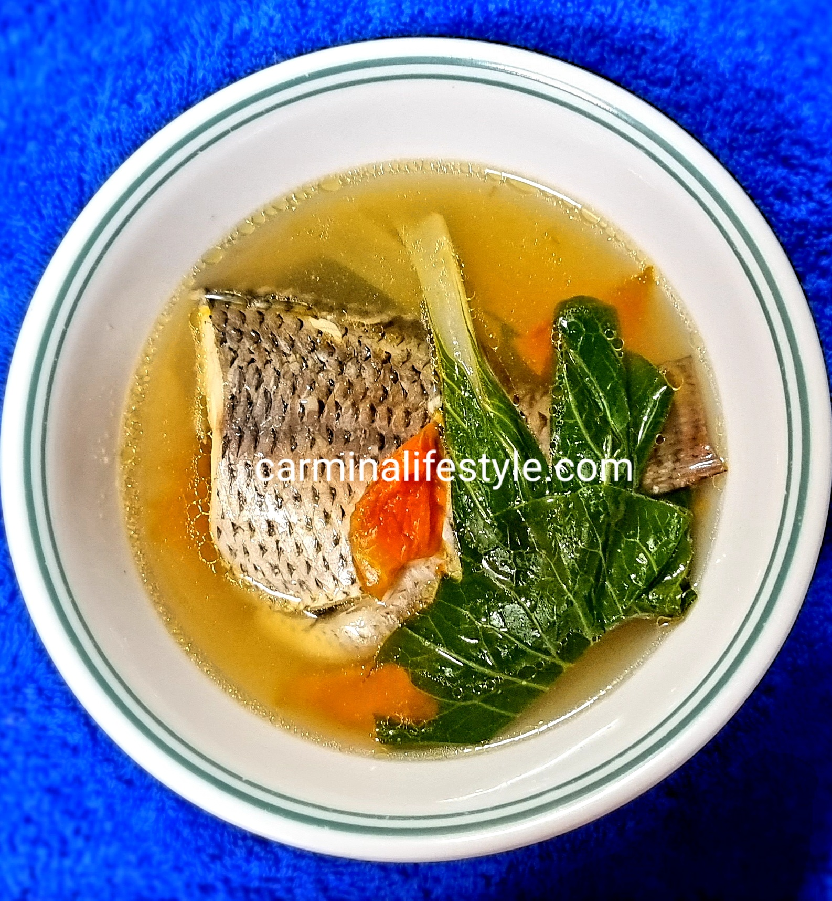

Tilapia w/ Pechay Recipe

Cooked Tilapia w/ Pechay
Tilapia w/ Pechay is perfect for rainy seasons, being both simple to cook and inexpensive.
Ingredients
Pechay leaves
1 pc tilapia
1 mug water
2-3 pcs tomatoes
2 cloves garlic
1 pc onion
Half-thumb sized ginger
Steps
Heat cooking oil.
Sauteed the onions, garlic and ginger.
Add the water as soup and the fish.
Wait until the boiling or just before boiling.
Add the pechay leaves. Wait for ~2-3 mins.
Homepage